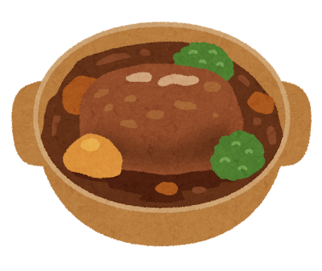
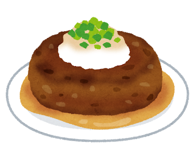

Hamburg Steak: Japan’s Favorite Home-Cooked Western Dish

From Hamburg to Japan
Hamburg steak (ハンバーグ, hambagu) traces its lineage to the German port city of Hamburg, where minced beef patties — Frikadellen — were a common dish. German immigrants brought the concept to America (where it became the hamburger), and Western-influenced Japanese chefs adapted it during the Meiji era into something distinctly Japanese.
Unlike an American hamburger, a Japanese hamburg steak is never served in a bun. It is an elegant, oval-shaped patty made from a mix of ground beef and pork, bound with egg and panko breadcrumbs, mixed with sauteed onion, and seasoned with nutmeg. It is served on a plate with rice, a rich demi-glace sauce, and a side of vegetables — a proper sit-down meal.
Why Japan Fell in Love
Hamburg steak became hugely popular in the 1960s and 70s as beef became more affordable. It perfectly fit the Japanese approach to yoshoku: taking a Western concept and refining it with Japanese sensibility. The patty is juicier and softer than a Western burger — almost custard-like inside — because of the breadcrumb and egg binder, and the careful technique of sealing the surface over high heat before gently finishing.
Today, hamburg steak consistently ranks as one of the top 3 favorite home-cooked meals among Japanese children. It is comfort food in its purest form — the dish kids request for birthday dinners.
Classic Hamburg with Demi-Glace
Nikomi Hamburg (煮込みハンバーグ)
Hamburg steak simmered in a rich tomato or demi-glace sauce until the patty absorbs the flavors and becomes impossibly tender. A winter favorite.

Wafu Hamburg (和風ハンバーグ)
Topped with grated daikon radish, ponzu sauce, and shiso leaf — the Japanese-style variation that strips away the heavy Western sauce for something lighter and more refreshing. It represents yoshoku coming full circle, blending back into traditional Japanese flavors.

Hamburg steak is the dish where East meets West at the family dinner table — borrowed in form, but Japanese in soul.